Using Variables¶
In this chapter we are going to learn how to use the Variables
The variable type is based on the value, and this value could be
String (One Character, Many Characters, Many Lines, Binary Data)
Number (Signed Integer, Unsigned Integer, Double, Boolean)
List (List of one type, List of many types, Nested Lists)
Object
Introduction¶
We can create this program quickly using the Quick Start component
Program Steps¶
After selecting the (Variables) template, we will get the next steps in the Goal Designer

Creating the Program¶
To create this program we will use the next components
Assignment
Print Text


 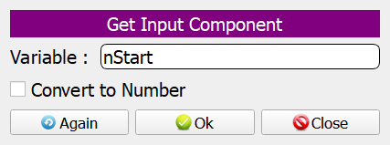
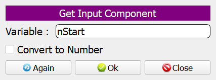


 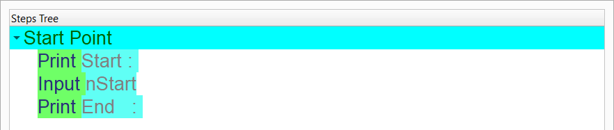
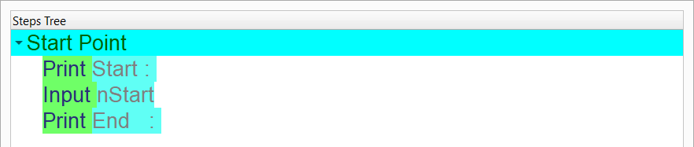
 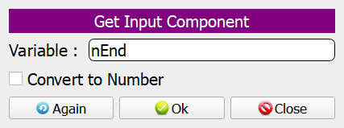
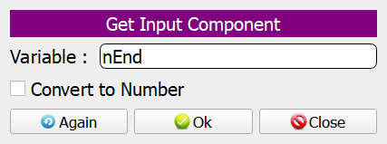
 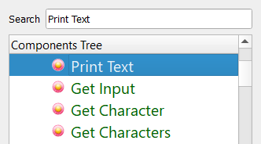
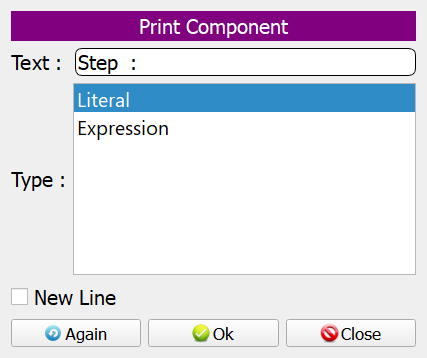
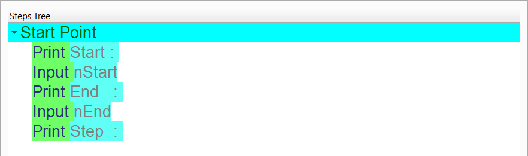
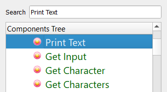
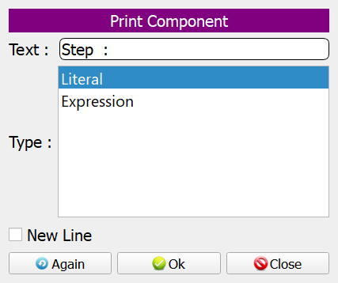
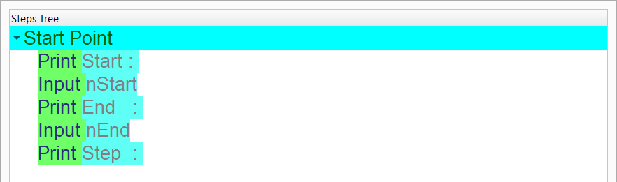


 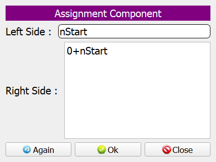
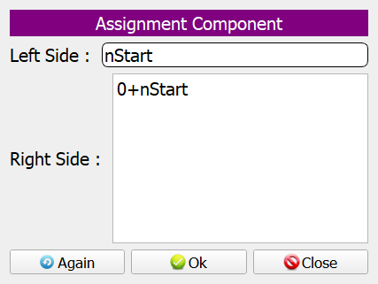
 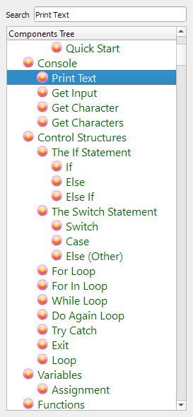
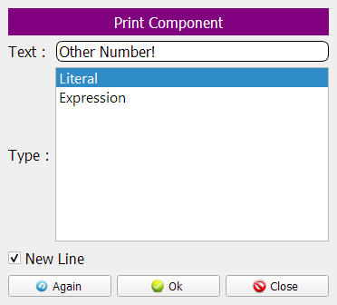
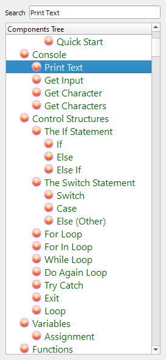
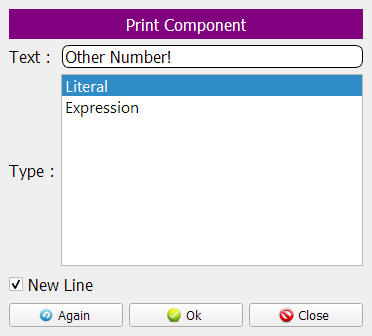
 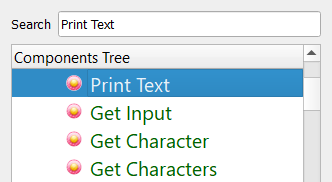
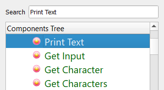


 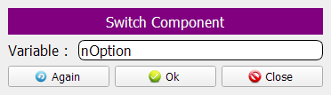
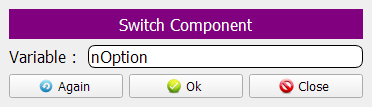


 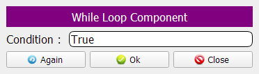
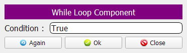


 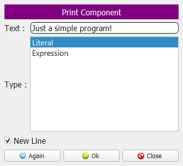
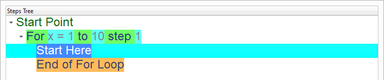
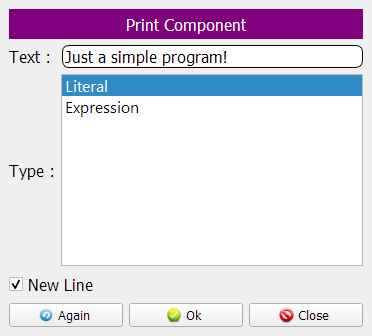
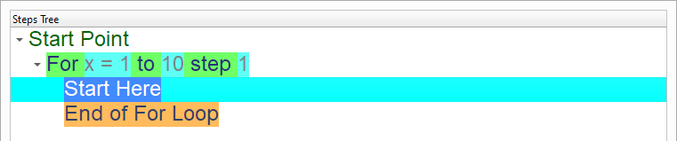


 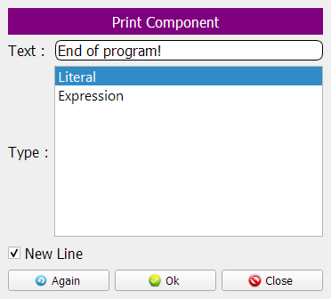
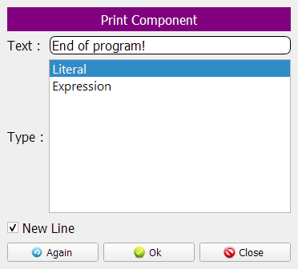